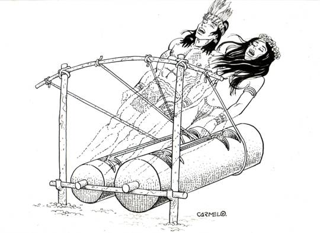
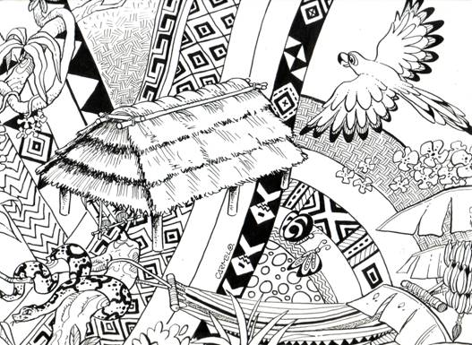
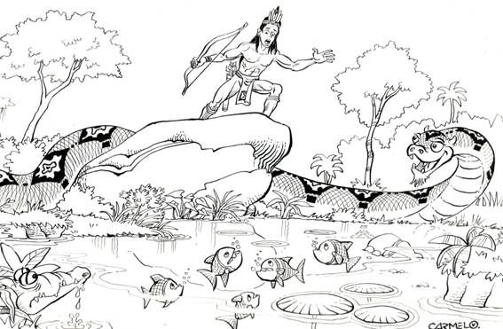
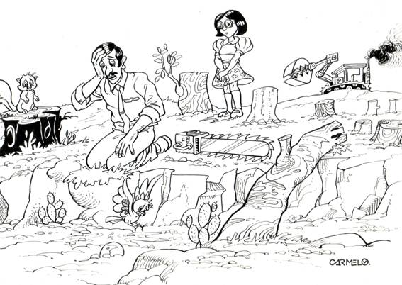
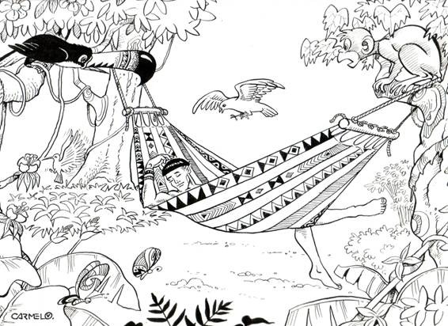

AMO EL AMAZONAS

En la selva del Amazonas,
Suena, suena, el Maguaré
Son 2 troncos de almas buenas
Son el hombre y la mujer.

En las malocas del olvido,
Entre hamacas y tejidos.
Repite de nuevo tu sonido
Toca, toca, el Maguaré.

Mariposas y armadillos,
Cacatúas, loros, chigüiros,
Son las tropas extinguidas
Llora, llora, el Maguaré.

Oye cacique, despierta al güio,
Pirañas y boas también,
Que nos defiendan del peligro
Que avisa el Maguaré.

Con 2 troncos de madera,
Grita al mundo no haya guerra,
Que la paz es sin fronteras
Para amar en esta tierra.

7- Sin reserva de los bosques
Muere y gime ya el hombre
Son 2 trampas de almas malas
El dinero y el poder.

8- Ya se asoman los tucanes
Los ancianos y los niños,
Y los bellos rosados delfines
Escuchan el Maguaré.
Oye huitoto, despierta vivo.
Enseña el código del saber,
Reclama al mundo con quejidos
Que nos guarden nuestro Edén.

2- Oye Huitoto, despierta vivo.
Enseña el código del saber,
Reclama al mundo con quejidos
Que nos guarden nuestro Edén.
Un amigo muy apreciado, nació en Tuchín, Córdoba, se llama Carmelo y lo seguimos buscando, diviértete con sus diseños que puedes imprimir.